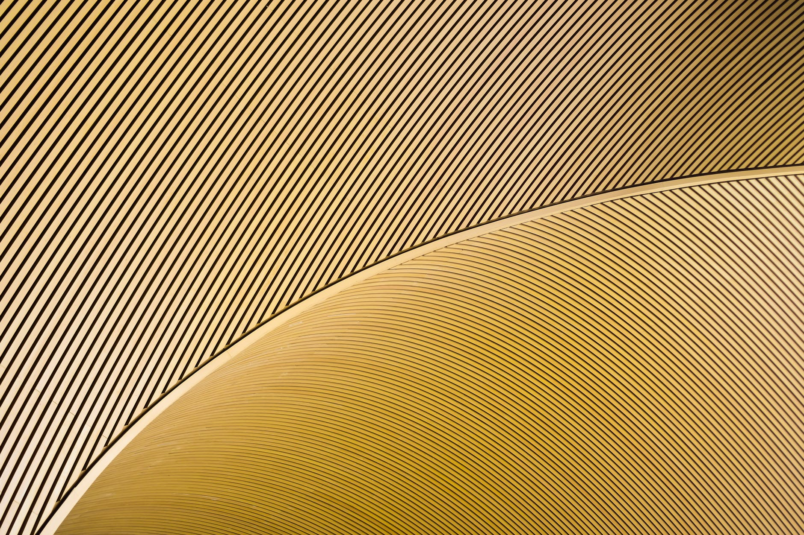

加热可消毒N95口罩重用
由于爆发的最佳方式COVID-19大流行，N95口罩已供不应求。卫生保健工作人员，特别是迫切需要这些面具来保护自己免受感染患者的呼吸道飞沫。但由于短缺，多有反复穿同样的面具。现在，研究人员已经测试了几种方法用于消毒N95材料，发现它们加热保留用于消毒的50个循环的过滤效率。
N95口罩含有形成多孔，透气的网“熔喷”聚丙烯纤维的层。为了帮助捕捉更小的颗粒可以滑过孔说，纤维静电。美国疾病控制中心和预防已建议了几种方法用于消毒N95口罩，如加热，紫外线（UV）辐射和漂白处理，但至今他们没有被广泛测试，尤其是对于多轮消毒。崔毅和同事们想比较的，可以合理地在医院环境中使用，看看面膜材料如何撑起来反复消毒的方法，五位。
在这项研究中，而不是分析N95口罩，应为医护人员保留，研究人员检测了用于制造这些口罩熔喷布片。它们处理的材料与特定的消毒剂和比较其之前和之后的消毒过滤器的气溶胶粒子（类似于呼吸飞沫，但缺少冠状）的能力。小组发现，用乙醇或氯漂白剂溶液喷洒在织物急剧降低过滤效率仅一个处理后，从约96％至56％（乙醇）或73％（漂白剂）。单个蒸汽处理保持过滤，但5个蒸汽处理导致效率急剧下降。 UV辐射最多允许消毒的20个循环;然而，施用UV的确切剂量杀死病毒而不破坏面膜的材料可能是有问题的，研究人员指出。最好的杀菌方法似乎进入白热化。例如，在185°F加热20分钟，使该织物无需过滤效率损失被处理50次。但经常穿上和去除N95口罩可能会影响健康，这也影响性能，研究人员指出。
资源 American Chemical Society. "Heating could be the best way to disinfect N95 masks for reuse." ScienceDaily. ScienceDaily, 5 May 2020. <www.sciencedaily.com/releases/2020/05/200505164638.htm>.Adrian Ng
Scientific Turk的中英文翻译